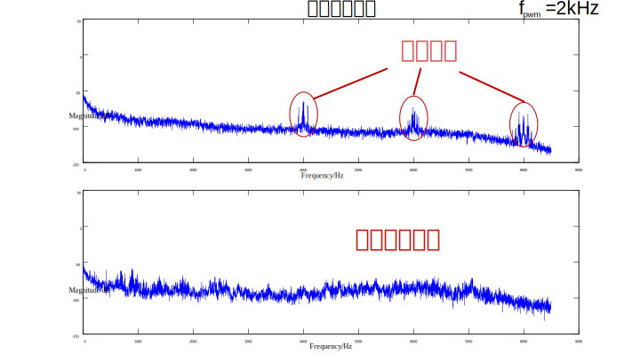

随机PWM算法
创建于2021-3-29
该项目完成于2012-9
该项目完成于2012-9
脉宽调制技术（PWM）是广泛应用于变频器的一项重要技术，通常情况下，变频器的开关器件以固定的频率工作。由于PWM开关电磁噪声在窄带高频区产生，会引起通信干扰以及高声频噪声。生理研究表明，和宽带噪声相比，窄带噪声更易使人感到不适，因此有必要对开关噪声加以抑制。
随机PWM就是一类可以有效降低开关噪声的方法。随机PWM通过改变载波频率或脉冲的位置等将电压、电流谐波分布在较宽的频带上，以减小电机开关噪声。使用随机PWM方法可以有效地降低采用普通SVPWM时电机会发出的高频的“啸叫”声，通过分析声音频谱，可以看出采用随机PWM后，声音频谱变得光滑一些，更加接近白噪声。如下图所示。

需要注意的是，采用随机PWM可以降低开关噪声，以减小高频噪声的影响，并未将电机噪声的分贝数降低，使用分贝仪进行测量可以发现，采用随机PWM后，电机噪声的分贝数反而升高了，但由于高频噪声降低，人体的不适感有所降低。